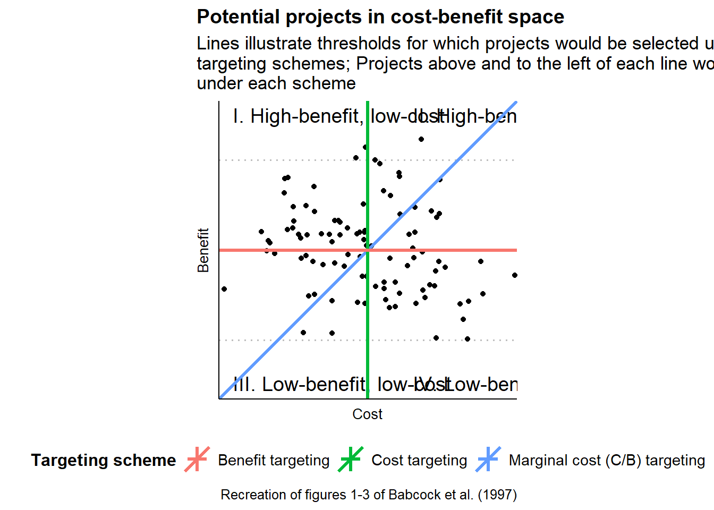
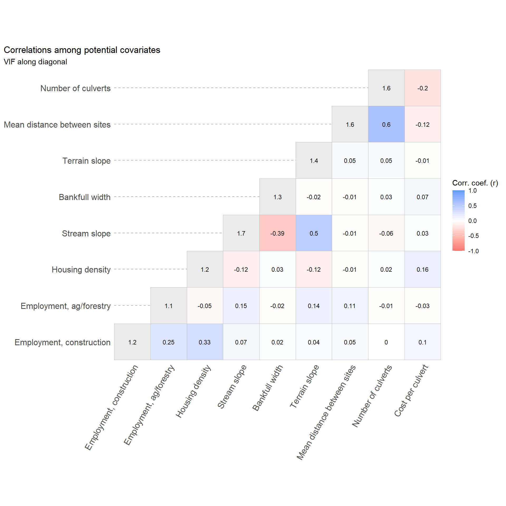
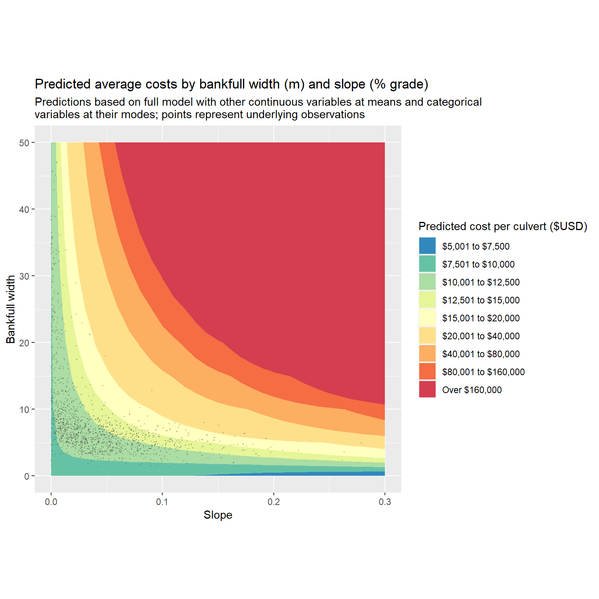
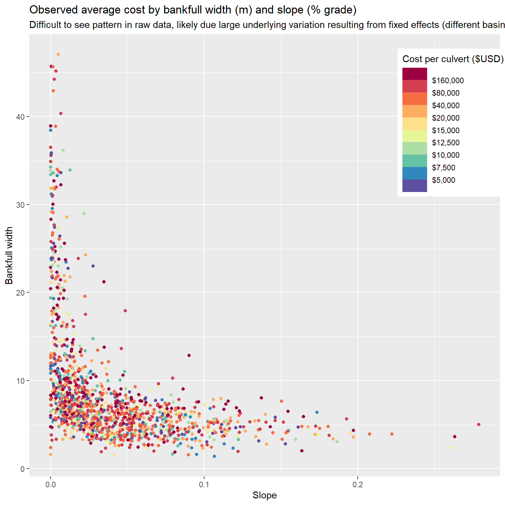
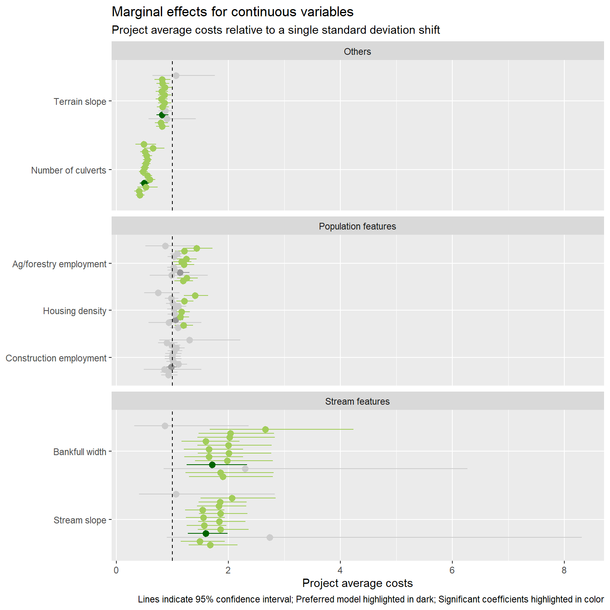
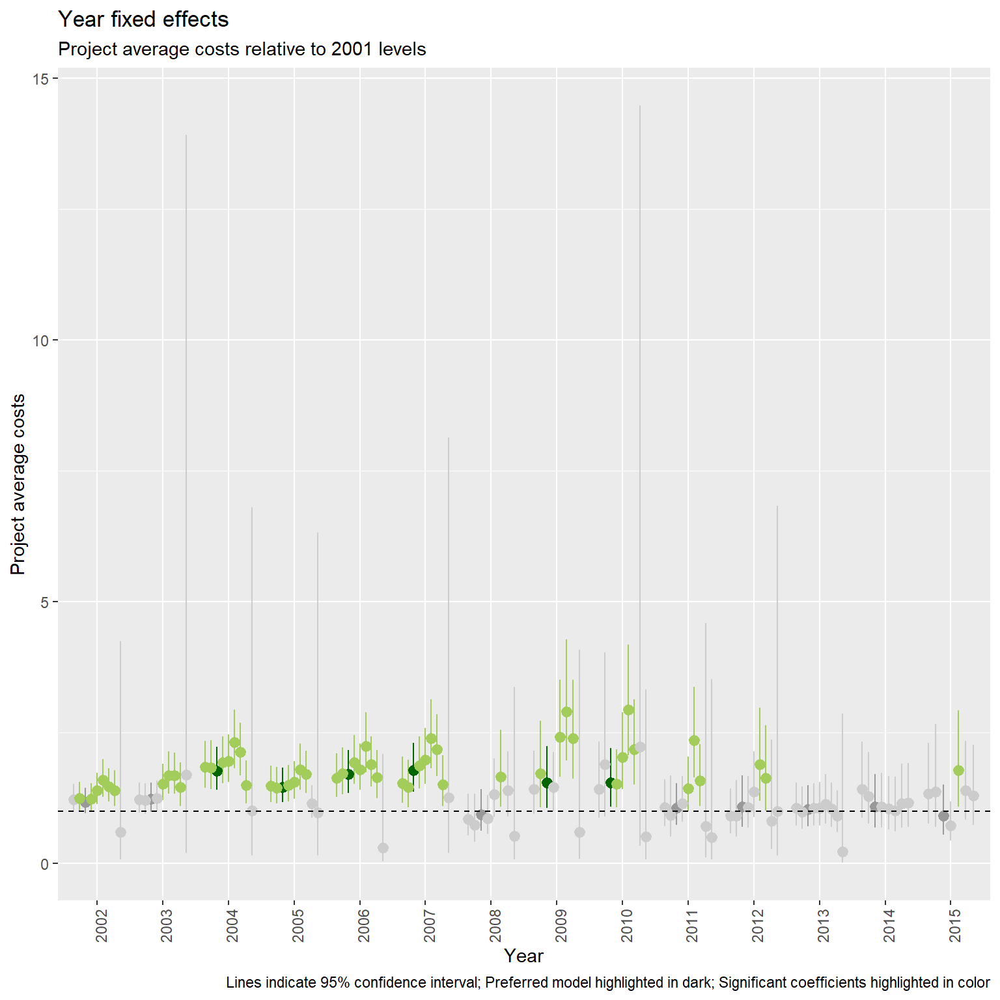
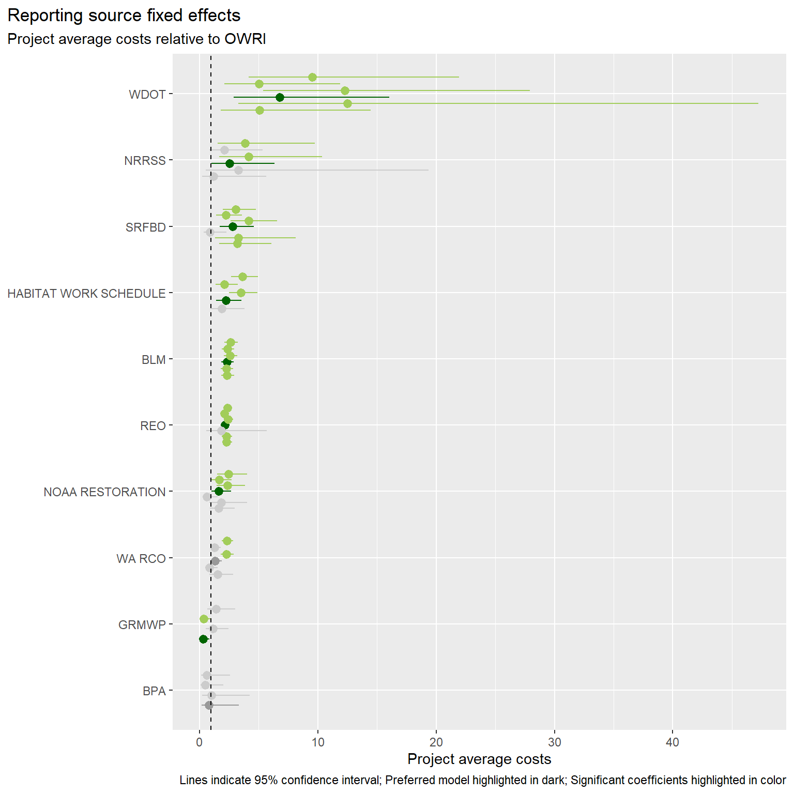
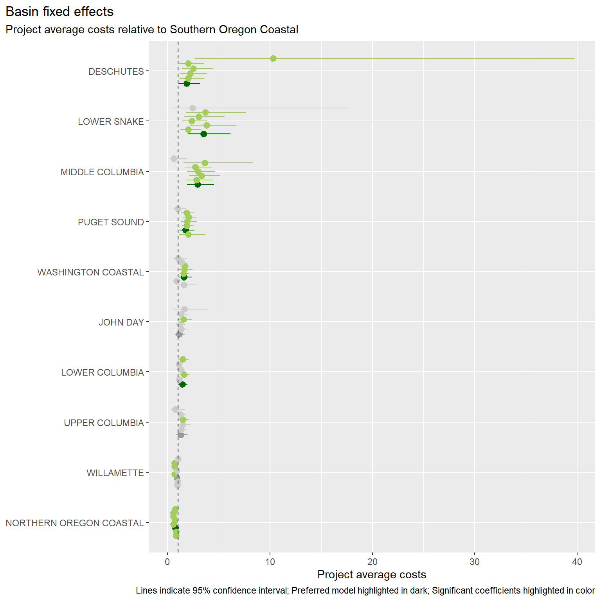
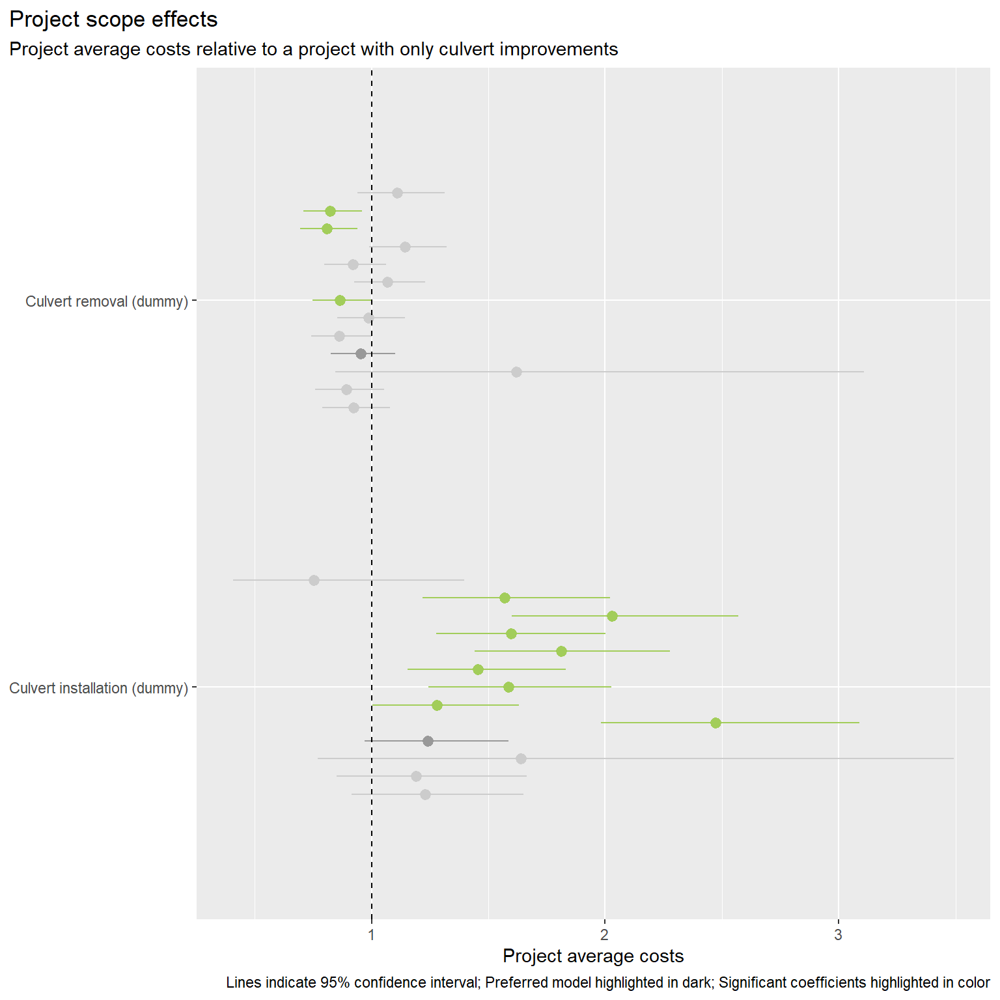

Culvert cost models with spatially explicit data
B. Van Deynze
October 26, 2020
Incorporating costs in conservation planning
Niche: use of cost data in conservation plans
- Just as benefits, variability in costs can be large
- Including spatial variability and variability across scope and scale of project
- Understanding this variability can improve planning outcomes
- Including spatial variability and variability across scope and scale of project
Key cites
Babcock et al. 1997: https://doi.org/10.2307/3147171
- Describes relative efficiency of management rules under different joint distributions of costs and benefits
- Alternative targeting instruments considered incl. cost-targeting, benefit-targeting, and marginal cost-targeting (cost per benefit targeting)
- Relative variability of benefits and costs, and correlation between the two, determine effects of sub-optimal targeting

Naidoo et al. 2006: https://doi.org/10.1016/j.tree.2006.10.003
- Types of costs: acquisition, management, transaction (and opportunity, damage costs)
- (Can be continuous or one-off)
- Often based on non-monetary proxies
- Most often area
- Sometimes weighted but in often arbitrary ways
- Efficiency gains from incorporating costs
- Past looks at culverts have focused on benefits and used simplified cost models
- Past looks at conservation costs have focused on land acquisition costs rather than restoration efforts
- Unique features of culvert improvement in PNW: upstream land access model, lots of streams/roads, large variation in slope and stream size
- Examine variability in cost levels and drivers of costs across culvert projects in PNW
- Compare levels and variability of costs to (possibly several) benefit measures
- Apply model to extant culverts to compare costs/benefit distributions over…
- Space: where are high benefit, low cost culverts?
- Observed projects vs. all culverts: what kind of decision rule is distribution of projects consistent with?
- Space: where are high benefit, low cost culverts?
- Timely b/c Washington culvert case
RQ1: How much variability is there in costs for culvert improvements?
- Over space?
- For observed projects vs. potential projects?
- Relative to variability in benefits? (And implications for planning rules/future research)
RQ2: What are drivers of culvert improvement costs?
- Economic drivers: economies of scale, transaction costs
- Geophysical drivers: stream features, terrain features
Data description
Explanatory variables included in the empirical model are described below, including a brief justification for inclusion. A more in-depth exploration of these variables can be found in this report.
| Variable | Mean | Std. dev. | Number of levels |
|---|---|---|---|
| Cost per culvert ($USD2019) | 82,600 | 96,700 | |
| Number of culverts (count) | 2.28 | 3.32 | |
| Mean distance between work sites (m) | 978 | 4,310 | |
| Stream slope (%) | 0.0429 | 0.0395 | |
| Bankfull width (m) | 7.96 | 6.16 | |
| Terrain slope (deg) | 3.31 | 2.6 | |
| Housing density (units per sq. km) | 8.23 | 46.7 | |
| Construction employment (jobs) | 3,080 | 5,520 | |
| Ag/forestry employment (jobs) | 758 | 544 | |
| Paved road | 2 | ||
| Road class | 4 | ||
| Land cover class | 7 | ||
| Basin | 11 | ||
| Year | 15 | ||
| Reporting source | 12 |
Stream hydrological features
- Stream slope (% grade): slope of stream at road crossing can require more expensive crossing design; identified via COMID matching with NHDPlus attributes.
- Bankfull width (m): bankfull width is the preferred measure of stream width at road crossing, accounting for potential width during high-water events; identified via COMID matching with NHDPlus attributes.
Road features
- Road paved (indicator): modification of a paved road is more expensive; may also proxy for higher traffic volumes; measured via HERE road data for nearest object.
- Road class (categorical): wider roads with more traffic are expected to be more expensive; measured via HERE road data for nearest object; classes range from 2 (largest) to 5 (smallest)
| Classification | Value | Description |
|---|---|---|
| Functional class | 1 | Roads that allow for high volume, maximum speed traffic movement between and through major metropolitan areas. Functional class = 1 is applied to roads with very few, if any, speed changes. Access to the road is usually controlled. |
| 2 | Roads that are used to channel traffic to functional class = 1 roads for travel between and through cities in the shortest amount of time. Functional class = 2 is applied to roads with very few, if any speed changes that allow for high volume, high speed traffic movement. | |
| 3 | Roads which interconnect functional class = 2 roads and provide a high volume of traffic movement at a lower level of mobility than functional class = 2 roads. | |
| 4 | Roads which provide for a high volume of traffic movement at moderate speeds between neighbourhoods. These roads connect with higher functional class roads to collect and distribute traffic between neighbourhoods. | |
| 5 | Roads whose volume and traffic movement are below the level of any functional class. In addition, walkways, truck only roads, bus only roads, and emergency vehicle only roads receive functional class = 5. The following also receive functional class = 5: access roads, parking lanes, and connections internal to select pois in north america. Roads in marginal and illegal settlements in developing countries | |
| 6 | “Roads” associated with work sites > 150m from the nearest HERE road for here_class_badmatch. |
Terrain features
Terrain slope (degrees): steeper terrain is expected to require more expensive projects; measured by the GTOPO30 grid cell the work site falls in.
Land cover (categorical): different land covers may be associated more expensive projects (e.g. less accessible sites in forest, difficult soils in welands, etc.); identified via cover with work site coordinates and NLCD land cover layer for nearest available year; here we use the broader NLCD Group definition rather than the more detailed classification (see below).
| Group | Value | Classification | Description |
|---|---|---|---|
| Barren | 31 | Barren land (rock/sand/clay) | Areas of bedrock, desert pavement, scarps, talus, slides, volcanic material, glacial debris, sand dunes, strip mines, gravel pits and other accumulations of earthen material. Generally, vegetation accounts for less than 15% of total cover. |
| Developed | 21 | Developed, open space | Areas with a mixture of some constructed materials, but mostly vegetation in the form of lawn grasses. Impervious surfaces account for less than 20% of total cover. These areas most commonly include large-lot single-family housing units, parks, golf courses, and vegetation planted in developed settings for recreation, erosion control, or aesthetic purposes. |
| Developed | 22 | Developed, low intensity | Areas with a mixture of constructed materials and vegetation. Impervious surfaces account for 20% to 49% percent of total cover. These areas most commonly include single-family housing units. |
| Developed | 23 | Developed, medium intensity | Areas with a mixture of constructed materials and vegetation. Impervious surfaces account for 50% to 79% of the total cover. These areas most commonly include single-family housing units. |
| Developed | 24 | Developed high intensity | Highly developed areas where people reside or work in high numbers. Examples include apartment complexes, row houses and commercial/industrial. Impervious surfaces account for 80% to 100% of the total cover. |
| Forest | 41 | Deciduous forest | Areas dominated by trees generally greater than 5 meters tall, and greater than 20% of total vegetation cover. More than 75% of the tree species shed foliage simultaneously in response to seasonal change. |
| Forest | 42 | Evergreen forest | Areas dominated by trees generally greater than 5 meters tall, and greater than 20% of total vegetation cover. More than 75% of the tree species maintain their leaves all year. Canopy is never without green foliage. |
| Forest | 43 | Mixed forest | Areas dominated by trees generally greater than 5 meters tall, and greater than 20% of total vegetation cover. Neither deciduous nor evergreen species are greater than 75% of total tree cover. |
| Herbaceous | 71 | Grassland/herbaceous | Areas dominated by gramanoid or herbaceous vegetation, generally greater than 80% of total vegetation. These areas are not subject to intensive management such as tilling, but can be utilized for grazing. |
| Planted-cultivated | 81 | Pasture/hay-areas of grasses, legumes, or grass | Legume mixtures planted for livestock grazing or the production of seed or hay crops, typically on a perennial cycle. Pasture/hay vegetation accounts for greater than 20% of total vegetation. |
| Planted-cultivated | 82 | Cultivated crops | Areas used for the production of annual crops, such as corn, soybeans, vegetables, tobacco, and cotton, and also perennial woody crops such as orchards and vineyards. Crop vegetation accounts for greater than 20% of total vegetation. This class also includes all land being actively tilled. |
| Shrubland | 52 | Shrub/scrub | Areas dominated by shrubs; less than 5 meters tall with shrub canopy typically greater than 20% of total vegetation. This class includes true shrubs, young trees in an early successional stage or trees stunted from environmental conditions. |
| Water | 11 | Open water | Areas of open water, generally with less than 25% cover of vegetation or soil. |
| Water | 12 | Perennial ice/snow | Areas characterized by a perennial cover of ice and/or snow, generally greater than 25% of total cover. |
| Wetlands | 90 | Woody wetlands | Areas where forest or shrubland vegetation accounts for greater than 20% of vegetative cover and the soil or substrate is periodically saturated with or covered with water. |
| Wetlands | 95 | Emergent herbaceous wetlands | Areas where perennial herbaceous vegetation accounts for greater than 80% of vegetative cover and the soil or substrate is periodically saturated with or covered with water. |
Population features
- Housing density (units per sq. km): more parcels near work site introduces complexities related to site access and available areas for staging, etc.; measured for the immediate catchment of stream identified via matching with NHDPlus attribute data.
- Employment in ag/forestry (jobs in county): availability of skilled labor may reduce project costs; employment data from county the work site is located in via County Business Patterns data.
- Employment in construction (jobs in county): see above.
Scale and scope controls
- Number of culverts associated with project (count): addressing multiple culverts under the same project may provide scale benefits, but might also increase complexity; measured via PNSHP database.
- Distance between project work sites (m): more dispersed work sites under a single project may increase project costs due to increased transportation costs (and time); measured as the log of the average euclidean distance between work sites for multiple work site projects (plus one to define the variable at zero); a dummy for single work site projects is also included to disentangle scale and distance effects.
- Action type (categorical): PNSHP distinguishes between culvert removals and culvert installations, in addition to culvert improvements (the dominate category); we expect removals to be cheapest, followed by improvements and installations; dummies are included when a project includes one or more culverts flagged as either removals or installations.
Fixed effects
- Year: the year the project was completed
- Basin: the basin (HUC6) where the work site is located
- Reporting source: the reporting source for the project
Simple correlations across variables
Here we present a couple measures of correlation between potential continuous explanatory variables. The figure below show provides Pearson’s correlation coefficients for each pair of continuous explanatory variables included in the initial models, along side the dependent variable. Also included is the Variance Inflation Factor for each variable as calculated when all presented variables are included in a simple log-linear model, with cost per culvert as the dependent variable. Because of previously mentioned high correlation between housing density and population density, we include only housing density.

It looks like mean distance between work sites and the number of culverts is positively correlated, and both are negatively correlated with average project costs. We would expect distance to increase costs but the number of culverts to decrease costs (due to economies of scale), all else equal. The strong positive correlation between number of culverts and distance between sites. Disentangling these effects should be possible with multiple regression.
Stream slope is negatively correlated with bankfull width, which means wider streams tend to be less steep. Stream slope is also positively correlated with terrain slope, as mentioned earlier. None of the three are strongly correlated with costs.
Finally, the two employment variables are positively correlated, and construction employment is positively correlated with housing density. Ag/forestry employment is weakly positively correlated with measures that indicate more rugged terrain such as stream and terrain slope. Housing density and to a lesser degree construction employment are positively correlated with costs.
No variables have particularly large VIFs, suggesting little potential for error-inflating multicollinearity.
Estimation
We estimate log-linear models estimated via OLS, with the average project cost as the dependent variable and the work site as the unit of observation. Stream slope and bankfull width are interacted in this specification. Recommendations in culvert engineering reports indicate that more expensive culvert designs are particularly necessary when both of these variables are extreme, and an interaction term can capture this effect.
$$
\operatorname{log(cost\_per\_culvert)} = \alpha + \beta_{1}(\operatorname{n\_culverts}) + \beta_{2}(\operatorname{log(dist\_mean\ +\ 1)}) + \beta_{3}(\operatorname{factor(I(n\_worksites\ ==\ 1))}_{\operatorname{TRUE}}) + \beta_{4}(\operatorname{action\_fishpass\_culvrem\_prj}) + \beta_{5}(\operatorname{action\_fishpass\_culvinst\_prj}) + \beta_{6}(\operatorname{slope}) + \beta_{7}(\operatorname{bankfull\_width}) + \beta_{8}(\operatorname{here\_paved}_{\operatorname{Y}}) + \beta_{9}(\operatorname{factor(here\_class)}_{\operatorname{3}}) + \beta_{10}(\operatorname{factor(here\_class)}_{\operatorname{4}}) + \beta_{11}(\operatorname{factor(here\_class)}_{\operatorname{5}}) + \beta_{12}(\operatorname{slope}_{\operatorname{\_deg}} \times \operatorname{slope\_deg}) + \beta_{13}(\operatorname{factor(nlcd\_current\_class)}_{\operatorname{Forest}}) + \beta_{14}(\operatorname{factor(nlcd\_current\_class)}_{\operatorname{Herbaceous}}) + \beta_{15}(\operatorname{factor(nlcd\_current\_class)}_{\operatorname{Planted-cultivated}}) + \beta_{16}(\operatorname{factor(nlcd\_current\_class)}_{\operatorname{Shrubland}}) + \beta_{17}(\operatorname{factor(nlcd\_current\_class)}_{\operatorname{Water}}) + \beta_{18}(\operatorname{factor(nlcd\_current\_class)}_{\operatorname{Wetlands}}) + \beta_{19}(\operatorname{hdens\_cat}) + \beta_{20}(\operatorname{emp\_const}) + \beta_{21}(\operatorname{emp\_agforest}) + \beta_{22}(\operatorname{basin}_{\operatorname{DESCHUTES}}) + \beta_{23}(\operatorname{basin}_{\operatorname{JOHN\ DAY}}) + \beta_{24}(\operatorname{basin}_{\operatorname{LOWER\ COLUMBIA}}) + \beta_{25}(\operatorname{basin}_{\operatorname{LOWER\ SNAKE}}) + \beta_{26}(\operatorname{basin}_{\operatorname{MIDDLE\ COLUMBIA}}) + \beta_{27}(\operatorname{basin}_{\operatorname{NORTHERN\ OREGON\ COASTAL}}) + \beta_{28}(\operatorname{basin}_{\operatorname{PUGET\ SOUND}}) + \beta_{29}(\operatorname{basin}_{\operatorname{UPPER\ COLUMBIA}}) + \beta_{30}(\operatorname{basin}_{\operatorname{WASHINGTON\ COASTAL}}) + \beta_{31}(\operatorname{basin}_{\operatorname{WILLAMETTE}}) + \beta_{32}(\operatorname{factor(project\_year)}_{\operatorname{2002}}) + \beta_{33}(\operatorname{factor(project\_year)}_{\operatorname{2003}}) + \beta_{34}(\operatorname{factor(project\_year)}_{\operatorname{2004}}) + \beta_{35}(\operatorname{factor(project\_year)}_{\operatorname{2005}}) + \beta_{36}(\operatorname{factor(project\_year)}_{\operatorname{2006}}) + \beta_{37}(\operatorname{factor(project\_year)}_{\operatorname{2007}}) + \beta_{38}(\operatorname{factor(project\_year)}_{\operatorname{2008}}) + \beta_{39}(\operatorname{factor(project\_year)}_{\operatorname{2009}}) + \beta_{40}(\operatorname{factor(project\_year)}_{\operatorname{2010}}) + \beta_{41}(\operatorname{factor(project\_year)}_{\operatorname{2011}}) + \beta_{42}(\operatorname{factor(project\_year)}_{\operatorname{2012}}) + \beta_{43}(\operatorname{factor(project\_year)}_{\operatorname{2013}}) + \beta_{44}(\operatorname{factor(project\_year)}_{\operatorname{2014}}) + \beta_{45}(\operatorname{factor(project\_year)}_{\operatorname{2015}}) + \beta_{46}(\operatorname{project\_source}_{\operatorname{BLM}}) + \beta_{47}(\operatorname{project\_source}_{\operatorname{BPA}}) + \beta_{48}(\operatorname{project\_source}_{\operatorname{GRMWP}}) + \beta_{49}(\operatorname{project\_source}_{\operatorname{HABITAT\ WORK\ SCHEDULE}}) + \beta_{50}(\operatorname{project\_source}_{\operatorname{NOAA\ RESTORATION}}) + \beta_{51}(\operatorname{project\_source}_{\operatorname{NRRSS}}) + \beta_{52}(\operatorname{project\_source}_{\operatorname{REO}}) + \beta_{53}(\operatorname{project\_source}_{\operatorname{SRFBD}}) + \beta_{54}(\operatorname{project\_source}_{\operatorname{WA\ RCO}}) + \beta_{55}(\operatorname{project\_source}_{\operatorname{WDOT}}) + \beta_{56}(\operatorname{slope} \times \operatorname{bankfull\_width}) + \epsilon
$$In addition to the fully specified model (mod_full), we present thirteen alternative models that include different fixed effects configurations or only sub-samples of the data focused on basin or reporting source criteria. For basins, we provide results estimated on a “core” group representing the five most frequently represented basins (Washington Coastal, Puget Sound, Southern Oregon Coastal, Northern Oregon Coastal, Willamette), as well as that core separated into basins primarily in Western Washington and Oregon respectively. For reporting sources, we focus on a similar “core” group ( Washington Recreation and Conservation Office, Oregon Water Resources Inventory, Habitat Work Schedule, Bureau of Land Management, Regional Ecosystem Office [an interagency group]), as well as versions estimated only on OWRI and WA RCO projects.
The resulting coefficients for the fixed effects and categorical variables, when exponentiated, can be interpreted as the ratio of average costs for that group relative those of the base group. Results for continuous variables are presented as exponentiated average marginal effect of a single standard deviation change, which can be interpreted as the ratio of costs relative to a work site with a standard deviation lower for the variable.
Coefficient estimates
| Term | mod_full | mod_nofe | mod_nofe_nobasin | mod_nofe_nosource | mod_nofe_noyear | mod_nofe_onlybasin | mod_nofe_onlysource | mod_nofe_onlyyear | mod_basins_core | mod_basins_wore | mod_basins_wwash | mod_sources_core | mod_sources_owri | mod_sources_warco |
|---|---|---|---|---|---|---|---|---|---|---|---|---|---|---|
| Intercept |
9.43*** (0.727) |
9.7*** (0.815) |
9.32*** (0.743) |
9.43*** (0.759) |
9.82*** (0.73) |
9.95*** (0.764) |
9.79*** (0.752) |
8.95*** (0.798) |
9.43*** (0.728) |
9.44*** (0.733) |
15.2*** (1.96) |
9.35*** (0.756) |
8.99*** (0.749) |
-11.3 (11) |
| Stream slope |
-2.17 (1.61) |
-2.99* (1.79) |
-2.16 (1.63) |
-2.8* (1.67) |
-1.65 (1.62) |
-2.6 (1.69) |
-1.63 (1.66) |
-3.32* (1.74) |
-2.62 (1.94) |
-2.9 (2.07) |
-3.14 (5.87) |
-2.9* (1.69) |
-5.14** (2.6) |
6.03 (5.8) |
| Bankfull width |
0.000256 (0.00519) |
-0.00269 (0.00575) |
-0.00141 (0.00529) |
0.00012 (0.00539) |
0.00191 (0.0052) |
0.000126 (0.00541) |
-0.00015 (0.00535) |
-0.00181 (0.00565) |
0.00362 (0.0055) |
0.00592 (0.00633) |
0.0108 (0.0114) |
-0.000391 (0.00558) |
0.00302 (0.0076) |
0.00767 (0.0128) |
| Stream slope X bankfull width |
1.01*** (0.309) |
1.36*** (0.34) |
0.985*** (0.312) |
1.31*** (0.32) |
0.901*** (0.312) |
1.31*** (0.323) |
0.887*** (0.317) |
1.37*** (0.332) |
1.12*** (0.378) |
1.03** (0.408) |
1.45 (1.13) |
1.36*** (0.326) |
2*** (0.519) |
-0.567 (1.13) |
| Road class: 3 |
-0.202 (0.796) |
-0.141 (0.888) |
-0.00775 (0.812) |
0.0639 (0.83) |
-0.384 (0.8) |
-0.221 (0.835) |
-0.175 (0.822) |
0.0758 (0.872) |
0.26 (0.852) |
0.305 (0.857) |
‒ |
0.1 (0.86) |
-0.021 (0.846) |
‒ |
| Road class: 4 |
0.378 (0.707) |
0.561 (0.8) |
0.243 (0.723) |
0.606 (0.739) |
0.378 (0.717) |
0.532 (0.75) |
0.255 (0.739) |
0.587 (0.777) |
0.547 (0.706) |
0.839 (0.715) |
‒ |
0.606 (0.735) |
0.705 (0.726) |
‒ |
| Road class: 5 |
0.278 (0.696) |
0.408 (0.788) |
0.199 (0.712) |
0.461 (0.727) |
0.294 (0.706) |
0.407 (0.739) |
0.216 (0.727) |
0.456 (0.765) |
0.28 (0.693) |
0.293 (0.694) |
0.112 (0.281) |
0.463 (0.723) |
0.12 (0.692) |
0.0216 (0.315) |
| Road paved (dummy) |
0.386*** (0.067) |
0.481*** (0.0734) |
0.397*** (0.0676) |
0.382*** (0.0697) |
0.397*** (0.0673) |
0.397*** (0.0701) |
0.408*** (0.0683) |
0.452*** (0.0721) |
0.332*** (0.0712) |
0.299*** (0.0771) |
0.579*** (0.202) |
0.377*** (0.0716) |
0.311*** (0.096) |
0.297 (0.208) |
| Terrain slope |
-0.0398*** (0.0128) |
-0.0273* (0.0141) |
-0.0379*** (0.013) |
-0.0305** (0.0132) |
-0.0426*** (0.0128) |
-0.0305** (0.0133) |
-0.0419*** (0.0132) |
-0.0288** (0.0138) |
-0.0375*** (0.0135) |
-0.0454*** (0.0148) |
-0.0156 (0.0343) |
-0.0388*** (0.014) |
-0.0469** (0.02) |
0.0123 (0.0512) |
| Land cover: Forest |
-0.363*** (0.0659) |
-0.484*** (0.0708) |
-0.365*** (0.0661) |
-0.401*** (0.0686) |
-0.388*** (0.0655) |
-0.448*** (0.0682) |
-0.39*** (0.0661) |
-0.42*** (0.0704) |
-0.382*** (0.0713) |
-0.395*** (0.0759) |
-0.135 (0.22) |
-0.383*** (0.0697) |
-0.512*** (0.0936) |
-0.0249 (0.23) |
| Land cover: Herbaceous |
-0.352** (0.161) |
-0.367** (0.179) |
-0.281* (0.163) |
-0.471*** (0.167) |
-0.347** (0.162) |
-0.483*** (0.169) |
-0.259 (0.166) |
-0.389** (0.175) |
-0.472** (0.184) |
-0.547*** (0.19) |
1.12 (0.748) |
-0.449*** (0.17) |
-0.402* (0.221) |
1.09 (0.683) |
| Land cover: Planted-cultivated |
-0.0293 (0.148) |
-0.328** (0.162) |
-0.0493 (0.149) |
-0.128 (0.154) |
-0.0868 (0.148) |
-0.233 (0.155) |
-0.104 (0.151) |
-0.21 (0.159) |
0.0000479 (0.151) |
0.00935 (0.167) |
-0.214 (0.395) |
-0.0883 (0.16) |
-0.182 (0.174) |
-0.0459 (0.484) |
| Land cover: Shrubland |
-0.154 (0.116) |
-0.163 (0.128) |
-0.0773 (0.117) |
-0.213* (0.12) |
-0.168 (0.117) |
-0.271** (0.122) |
-0.0688 (0.119) |
-0.13 (0.125) |
-0.275** (0.14) |
-0.361** (0.15) |
0.525 (0.408) |
-0.258** (0.123) |
-0.511*** (0.16) |
0.189 (0.363) |
| Land cover: Water |
-0.0548 (0.364) |
0.0752 (0.404) |
0.077 (0.369) |
0.0516 (0.376) |
-0.172 (0.368) |
-0.0352 (0.381) |
-0.0355 (0.376) |
0.136 (0.393) |
-0.534 (0.491) |
-0.628 (0.492) |
‒ |
-0.236 (0.399) |
-0.0439 (0.575) |
-0.579 (1.01) |
| Land cover: Wetlands |
-0.186 (0.122) |
-0.264* (0.135) |
-0.184 (0.124) |
-0.267** (0.127) |
-0.191 (0.123) |
-0.302** (0.128) |
-0.186 (0.126) |
-0.262** (0.132) |
-0.226* (0.133) |
-0.246 (0.159) |
-0.069 (0.266) |
-0.229* (0.131) |
-0.215 (0.163) |
0.0662 (0.29) |
| Housing density |
0.000561 (0.000669) |
0.00141** (0.000695) |
0.000374 (0.000682) |
0.0016** (0.000656) |
0.000277 (0.000668) |
0.00105 (0.000655) |
0.0000459 (0.000686) |
0.00206*** (0.000687) |
0.000912 (0.000704) |
0.00232** (0.00092) |
-0.000379 (0.00132) |
-0.000609 (0.00147) |
0.0108*** (0.00252) |
-0.0034 (0.00242) |
| Ag/forestry employment |
0.000117* (0.0000638) |
0.0000325 (0.0000589) |
0.0000174 (0.0000569) |
0.000172*** (0.0000661) |
0.00014** (0.0000641) |
0.0002*** (0.0000664) |
0.0000262 (0.0000576) |
0.0000737 (0.0000588) |
0.000166** (0.000068) |
0.000224*** (0.0000731) |
-0.0000167 (0.000259) |
0.000176*** (0.000067) |
0.00033*** (0.0000855) |
-0.00013 (0.000247) |
| Construction employment |
-0.00000202 (0.00000659) |
0.00000922 (0.00000609) |
0.000000838 (0.00000582) |
0.0000000281 (0.00000678) |
-0.000000587 (0.00000661) |
0.000000419 (0.00000679) |
0.00000289 (0.00000586) |
0.00000631 (0.000006) |
-0.0000062 (0.00000681) |
-0.0000126 (0.0000137) |
-0.00000576 (0.0000109) |
-0.00000128 (0.00000721) |
-0.0000159 (0.0000146) |
0.0000115 (0.0000118) |
| Number of culverts |
-0.106*** (0.0124) |
-0.0784*** (0.0116) |
-0.0905*** (0.0119) |
-0.112*** (0.0128) |
-0.104*** (0.0112) |
-0.0973*** (0.0116) |
-0.0903*** (0.0109) |
-0.0927*** (0.0126) |
-0.152*** (0.0161) |
-0.162*** (0.0218) |
-0.0972*** (0.0258) |
-0.1*** (0.0134) |
-0.069*** (0.0223) |
-0.0897*** (0.0233) |
| Mean distance between work sites, log |
0.0422 (0.0269) |
0.0367 (0.0286) |
0.0481* (0.0272) |
0.0502* (0.0278) |
0.00742 (0.0264) |
0.0196 (0.0273) |
0.00713 (0.0269) |
0.0751*** (0.0287) |
0.0423 (0.0288) |
0.0473 (0.0304) |
-0.665** (0.266) |
0.0547* (0.0282) |
0.0845** (0.0344) |
3.13** (1.5) |
| Single work site (dummy) |
0.56*** (0.164) |
0.842*** (0.176) |
0.695*** (0.166) |
0.607*** (0.171) |
0.423*** (0.162) |
0.525*** (0.168) |
0.536*** (0.165) |
0.935*** (0.176) |
0.526*** (0.174) |
0.547*** (0.177) |
-5.16** (2) |
0.625*** (0.172) |
0.858*** (0.208) |
22.8** (10.8) |
| Culvert installation (dummy) |
0.215* (0.126) |
0.906*** (0.113) |
0.247** (0.124) |
0.462*** (0.124) |
0.374*** (0.118) |
0.595*** (0.117) |
0.469*** (0.115) |
0.707*** (0.121) |
0.206 (0.15) |
0.174 (0.171) |
0.495 (0.382) |
0.451*** (0.129) |
-0.284 (0.314) |
3.41*** (1.11) |
| Culvert removal (dummy) |
-0.0475 (0.0737) |
-0.149* (0.0765) |
-0.0123 (0.0749) |
-0.147** (0.0745) |
0.065 (0.0722) |
-0.0832 (0.0727) |
0.133* (0.0738) |
-0.214*** (0.0775) |
-0.0797 (0.0797) |
-0.113 (0.0837) |
0.482 (0.329) |
-0.194** (0.0775) |
0.105 (0.0848) |
0.538 (0.432) |
| Project source: BLM |
0.842*** (0.115) |
‒ |
0.95*** (0.112) |
‒ |
0.866*** (0.112) |
‒ |
0.969*** (0.11) |
‒ |
0.846*** (0.116) |
0.822*** (0.118) |
‒ | ‒ | ‒ | ‒ |
| Project source: BPA |
-0.233 (0.734) |
‒ |
0.00637 (0.732) |
‒ |
-0.725 (0.728) |
‒ |
-0.476 (0.731) |
‒ | ‒ | ‒ | ‒ | ‒ | ‒ | ‒ |
| Project source: GRMWP |
-1.06** (0.46) |
‒ |
0.151 (0.384) |
‒ |
-0.959** (0.464) |
‒ |
0.352 (0.39) |
‒ | ‒ | ‒ | ‒ | ‒ | ‒ | ‒ |
| Project source: HABITAT WORK SCHEDULE |
0.804*** (0.235) |
‒ |
1.26*** (0.172) |
‒ |
0.748*** (0.219) |
‒ |
1.29*** (0.156) |
‒ |
0.634* (0.359) |
‒ | ‒ | ‒ | ‒ | ‒ |
| Project source: NOAA RESTORATION |
0.502** (0.251) |
‒ |
0.871*** (0.245) |
‒ |
0.514** (0.252) |
‒ |
0.902*** (0.249) |
‒ |
0.494 (0.305) |
0.607 (0.4) |
-0.428 (0.442) |
‒ | ‒ | ‒ |
| Project source: NRRSS |
0.929** (0.468) |
‒ |
1.43*** (0.463) |
‒ |
0.749 (0.473) |
‒ |
1.35*** (0.472) |
‒ |
0.186 (0.786) |
‒ |
1.19 (0.896) |
‒ | ‒ | ‒ |
| Project source: REO |
0.765*** (0.0855) |
‒ |
0.891*** (0.0807) |
‒ |
0.755*** (0.0803) |
‒ |
0.873*** (0.0769) |
‒ |
0.834*** (0.0909) |
0.835*** (0.0949) |
0.621 (0.564) |
‒ | ‒ | ‒ |
| Project source: SRFBD |
1.04*** (0.249) |
‒ |
1.43*** (0.231) |
‒ |
0.805*** (0.24) |
‒ |
1.13*** (0.223) |
‒ |
1.17*** (0.325) |
1.19** (0.463) |
-0.0906 (0.46) |
‒ | ‒ | ‒ |
| Project source: WA RCO |
0.288 (0.179) |
‒ |
0.832*** (0.116) |
‒ |
0.254 (0.17) |
‒ |
0.846*** (0.106) |
‒ |
0.442 (0.312) |
‒ |
-0.147 (0.289) |
‒ | ‒ | ‒ |
| Project source: WDOT |
1.92*** (0.438) |
‒ |
2.51*** (0.418) |
‒ |
1.61*** (0.439) |
‒ |
2.26*** (0.424) |
‒ |
1.63*** (0.532) |
‒ |
2.53*** (0.67) |
‒ | ‒ | ‒ |
| Year: 2002 |
0.162 (0.106) |
‒ |
0.212** (0.108) |
0.338*** (0.108) |
‒ | ‒ | ‒ |
0.465*** (0.114) |
0.201* (0.11) |
0.22** (0.112) |
0.104 (0.605) |
0.384*** (0.11) |
0.335*** (0.123) |
-0.518 (0.988) |
| Year: 2003 |
0.212* (0.115) |
‒ |
0.224* (0.118) |
0.416*** (0.116) |
‒ | ‒ | ‒ |
0.523*** (0.122) |
0.203* (0.119) |
0.185 (0.122) |
1.13 (0.729) |
0.521*** (0.117) |
0.378*** (0.143) |
0.525 (1.06) |
| Year: 2004 |
0.572*** (0.116) |
‒ |
0.658*** (0.117) |
0.671*** (0.117) |
‒ | ‒ | ‒ |
0.838*** (0.123) |
0.609*** (0.122) |
0.602*** (0.129) |
1.19* (0.647) |
0.757*** (0.119) |
0.405*** (0.139) |
0.0139 (0.958) |
| Year: 2005 |
0.38*** (0.115) |
‒ |
0.401*** (0.117) |
0.442*** (0.118) |
‒ | ‒ | ‒ |
0.587*** (0.123) |
0.395*** (0.118) |
0.371*** (0.122) |
1.35** (0.637) |
0.534*** (0.12) |
0.135 (0.134) |
-0.0307 (0.943) |
| Year: 2006 |
0.534*** (0.121) |
‒ |
0.658*** (0.123) |
0.586*** (0.125) |
‒ | ‒ | ‒ |
0.809*** (0.129) |
0.491*** (0.128) |
0.54*** (0.132) |
1.38* (0.704) |
0.637*** (0.127) |
0.498*** (0.139) |
-1.21 (0.982) |
| Year: 2007 |
0.576*** (0.133) |
‒ |
0.624*** (0.134) |
0.686*** (0.136) |
‒ | ‒ | ‒ |
0.871*** (0.14) |
0.431*** (0.144) |
0.376** (0.155) |
1.45** (0.621) |
0.779*** (0.137) |
0.408** (0.162) |
0.234 (0.937) |
| Year: 2008 |
-0.0614 (0.211) |
‒ |
-0.152 (0.214) |
0.283 (0.209) |
‒ | ‒ | ‒ |
0.507** (0.218) |
-0.166 (0.231) |
-0.304 (0.302) |
0.83 (0.681) |
0.329 (0.221) |
‒ |
-0.647 (0.937) |
| Year: 2009 |
0.435** (0.19) |
‒ |
0.376* (0.193) |
0.882*** (0.19) |
‒ | ‒ | ‒ |
1.07*** (0.198) |
0.355* (0.21) |
0.539** (0.237) |
0.705 (0.683) |
0.869*** (0.197) |
‒ |
-0.509 (0.965) |
| Year: 2010 |
0.435** (0.182) |
‒ |
0.421** (0.181) |
0.707*** (0.181) |
‒ | ‒ | ‒ |
1.08*** (0.18) |
0.355 (0.25) |
0.64* (0.384) |
0.879 (0.67) |
0.778*** (0.186) |
0.801 (0.953) |
-0.657 (0.935) |
| Year: 2011 |
0.0619 (0.185) |
‒ |
0.141 (0.189) |
0.359** (0.181) |
‒ | ‒ | ‒ |
0.857*** (0.183) |
0.0683 (0.206) |
-0.074 (0.304) |
1.31* (0.673) |
0.461** (0.186) |
-0.342 (0.95) |
-0.685 (0.979) |
| Year: 2012 |
0.0827 (0.223) |
‒ |
0.0673 (0.227) |
0.318 (0.225) |
‒ | ‒ | ‒ |
0.635*** (0.233) |
-0.0979 (0.232) |
-0.0978 (0.289) |
0.941 (0.677) |
0.489** (0.245) |
-0.205 (0.542) |
-0.000402 (0.967) |
| Year: 2013 |
0.0288 (0.189) |
‒ |
0.0525 (0.193) |
0.0583 (0.196) |
‒ | ‒ | ‒ |
0.13 (0.207) |
0.0586 (0.191) |
-0.00925 (0.202) |
1.72** (0.764) |
0.041 (0.2) |
-0.09 (0.216) |
-1.46 (1.26) |
| Year: 2014 |
0.0811 (0.233) |
‒ |
0.0834 (0.238) |
0.0428 (0.239) |
‒ | ‒ | ‒ |
0.00983 (0.252) |
0.353 (0.252) |
0.246 (0.261) |
1.4 (1.22) |
0.137 (0.259) |
0.15 (0.255) |
‒ |
| Year: 2015 |
-0.0899 (0.254) |
‒ |
-0.327 (0.255) |
0.579** (0.253) |
‒ | ‒ | ‒ |
0.333 (0.264) |
0.284 (0.281) |
0.312 (0.341) |
2.12** (0.879) |
0.257 (0.287) |
‒ | ‒ |
| Basin: DESCHUTES |
0.611** (0.28) |
‒ | ‒ |
0.707** (0.292) |
0.788*** (0.281) |
0.916*** (0.293) |
‒ | ‒ | ‒ | ‒ | ‒ |
0.693** (0.291) |
2.33*** (0.689) |
‒ |
| Basin: JOHN DAY |
0.113 (0.203) |
‒ | ‒ |
0.293 (0.209) |
0.177 (0.203) |
0.441** (0.209) |
‒ | ‒ | ‒ | ‒ | ‒ |
0.259 (0.215) |
0.499 (0.442) |
‒ |
| Basin: LOWER COLUMBIA |
0.356** (0.153) |
‒ | ‒ |
0.11 (0.148) |
0.462*** (0.153) |
0.219 (0.148) |
‒ | ‒ | ‒ | ‒ | ‒ |
0.0878 (0.151) |
0.393** (0.179) |
‒ |
| Basin: LOWER SNAKE |
1.25*** (0.288) |
‒ | ‒ |
0.692*** (0.247) |
1.34*** (0.29) |
0.86*** (0.249) |
‒ | ‒ | ‒ | ‒ | ‒ |
1.11*** (0.311) |
1.3*** (0.372) |
0.886 (1) |
| Basin: MIDDLE COLUMBIA |
1.08*** (0.224) |
‒ | ‒ |
1.04*** (0.226) |
1.19*** (0.223) |
1.09*** (0.226) |
‒ | ‒ | ‒ | ‒ | ‒ |
0.993*** (0.242) |
1.28*** (0.427) |
-0.541 (0.592) |
| Basin: NORTHERN OREGON COASTAL |
-0.301*** (0.0921) |
‒ | ‒ |
-0.554*** (0.0923) |
-0.332*** (0.0915) |
-0.565*** (0.0925) |
‒ | ‒ |
-0.204** (0.094) |
-0.19** (0.0962) |
‒ |
-0.555*** (0.0925) |
-0.292** (0.115) |
‒ |
| Basin: PUGET SOUND |
0.558*** (0.204) |
‒ | ‒ |
0.621*** (0.158) |
0.646*** (0.204) |
0.719*** (0.156) |
‒ | ‒ |
0.707** (0.303) |
‒ | ‒ |
0.625*** (0.175) |
‒ |
-0.00949 (0.304) |
| Basin: UPPER COLUMBIA |
0.254 (0.207) |
‒ | ‒ |
0.279* (0.17) |
0.382* (0.207) |
0.394** (0.162) |
‒ | ‒ | ‒ | ‒ | ‒ |
0.229 (0.176) |
‒ |
-0.307 (0.412) |
| Basin: WASHINGTON COASTAL |
0.47** (0.202) |
‒ | ‒ |
0.44*** (0.15) |
0.494** (0.202) |
0.51*** (0.145) |
‒ | ‒ |
0.468 (0.301) |
‒ |
-0.138 (0.236) |
0.301* (0.165) |
‒ |
0.0341 (0.303) |
| Basin: WILLAMETTE |
-0.102 (0.0885) |
‒ | ‒ |
-0.399*** (0.0868) |
-0.106 (0.0877) |
-0.391*** (0.0868) |
‒ | ‒ |
-0.0475 (0.0901) |
-0.0226 (0.103) |
‒ |
-0.39*** (0.0876) |
0.0133 (0.119) |
‒ |
| Adj. R2 | 0.44 | 0.276 | 0.412 | 0.388 | 0.422 | 0.366 | 0.384 | 0.319 | 0.465 | 0.451 | 0.335 | 0.386 | 0.326 | 0.296 |
| AIC | 3904 | 4230 | 3963.3 | 4018.6 | 3935 | 4053.4 | 4014.4 | 4158.6 | 3307.9 | 2867.4 | 437 | 3820.9 | 1970 | 354.2 |
| BIC | 4207.8 | 4355.7 | 4214.7 | 4270.1 | 4165.5 | 4231.5 | 4192.5 | 4357.6 | 3561.8 | 3084.6 | 564.6 | 4070.1 | 2161.7 | 465.1 |
| N | 1390 | 1390 | 1390 | 1390 | 1390 | 1390 | 1390 | 1390 | 1183 | 1029 | 153 | 1328 | 709 | 126 |
| * p < 0.1, ** p < 0.05, *** p < 0.01 |
Model fit discussion
The full model has an adjusted R-squared of 0.44, indicating a decent model fit. The version of the model with no fixed effects has an adjusted R-squared of 0.276, indicating that a significant amount of variability is explained by the additional explanatory variables. When fixed effect categories are removed, we can check with fixed effects explain the most variation relative to each other. It looks like reporting source accounts for the most variation, followed by basin then year.
When the model is fit only on culverts in the “core” basins, adjusted R-squared improves slightly, indicating the model performs better in these basins relative to the ones with less representation in the sample. This is particularly true for the Western Oregon basins where the model still has a pretty high R-squared. It’s harder to say whether the reduced R-squared for the Western Washington basins is due to weaker model fit or simply small sample size.
When the model is fit only on the “core” reporting sources, R-squared drops significantly. This might be evidence that including the additional sources is important for improving the overall fit of the model, even though less than 100 observations are lost.
Model visualizations
Slope and bankfull width interaction effect

Work sites are distributed along a slope - bankfull width convex curve, with few projects both high slope and high width. This pattern mirrors the cost contours over slope - bankfull width space. Comparing the observed projects to other culverts in the Washington or Oregon inventories will show whether this relationship exists for all culverts or whether projects were selected along the cost curve. That is, would projects that did not occur exist in the upper-right space?
Continuous variables

A standard deviation change in both terrain slope and number of culverts both reduce average costs by about 10 percent and half respectively in the preferred model. The number of culverts result suggests evidence of returns to scale. The cost-reducing effect of terrain slope is unituitive, and may be picking up other cost-reducing effects in more remote, rugged, isolated areas.
The average marginal effects for all three population features are insignificant in the preferred model. However, in some several of the alternative models, ag/forestry employment and housing density each have slightly positive effects, suggesting that each increase costs. The housing density effect might be evidence of increased access costs due to negotiating with multiple landowners. The employment effect is less intuitive, but may also be picking up on cost increases in more rural areas, rather than a true population effect.
Bankfull width and stream slope both significant positive effects in the preferred models. A standard deviation increase in either results in about a fifty percent increase in costs when the other is held at its mean. As seen in the earlier figure and raw coefficients, this effect is driven largely by the interaction term in the model. Note that the models for which the effects are insignificant are those estimated using only Washington data, over either the Washington basins only or WA RCO projects.
Fixed effects and categorical variables
Year effects

For the preferred model, project average costs are nearly twice as high than 2001 levels between 2004 and 2010, with the exception of 2008, when other factors are controlled for. Other models generally follow this pattern, while the models for Western Washington basins/sources have fairly extreme standard errors caused by small sample size.
Reporting source effects

WDOT projects have average costs over five times as large as OWRI projects, even when accounting for other factors. The standard errors on this estimate are quite large though, suggesting a more accurate estimate might be possible with more data from this source. Other sources lie BLM and REO have tightly estimated positive effects. OWRI projects have among the lowest average costs.
Basin effects

After controlling for other factors with the preferred model, projects in the Lower Snake Basin have the highest average costs, followed by the Middle Columbia Basin, with average costs roughly four and three times those in the Southern Oregon Coastal Basin. The Western Washington basins (Puget Sound and Washington Coastal) both have typical average costs about double those in the reference basin. These effects are tightly estimated, though the basins with the smallest standard errors are Nothern Oregon Coastal and Willamette.
Land cover effects

Work sites in areas with the land cover classifications in the developed group (the reference level) have among the highest costs, though those in the planted-cultivated and water groups have high costs as well. Work sites in forests and herbaceous land cover areas have average costs around a quarter lower than the reference group.
Road feature effects

The only consistent effect found among the road feature variables is its paved status. Paved roads are associated with work sites roughly 50 percent higher than unpaved work sites.
Scope and scale effects

There is some evidence from the alternative models that installations are more expensive than improvements, which are more expensive than removals, though this effect largely washes out when the full suite of fixed effects is included.
Benefit - cost visualizations
As a simple examination of what kind of decision rule might be in play for determining which culverts were selected, we plot as a benefit proxy total upstream length (in km) versus observed cost per culvert. Under a cost-targeting rule, all work sites would be to the left of a cost threshold, while for a benefit-targeting rule all would be above a benefit threshold. A benefit-cost ratio standard would be above an upward sloping line.

No evidence that projects are selected on cost or benefit-cost ratio basis. It does somewhat appear that the observed projects follow a benefit targeting pattern with a fairly low benefit cut-off, as evidenced by the horizontal pattern among the data. For the Southern Oregon Coastal and Willamette Basins, there appears to be a slight upward tilt in the higher-cost region, indicating that benefit-cost targeting may be more frequent for higher-cost projects.
Adding culverts where no project is observed with costs predicted via the above models could reveal where observed projects exisit in the space relative to the universe of potential projects, which should provide more clarity to the above analysis.
Conclusions
Key findings
- Stream features slope and bankfull width increase average costs, especially when they are both high.
- Paved roads are more expensive to improve, while other road variables have no discernible effect.
- Strangely, terrain slope at work site has a negative effect. Could this be picking up on some other factor associated with more rugged or remote work sites?
Next steps
- More variables: density of culvert project measures (issues w/ inconsistent reporting across space), distance to pop. center (euclidean or routed with HERE roads from Blake)
- Improved benefit estimates: total upstream distance by species and habitat use, weighted by catchment road density, etc.
- Forecast costs/benefits for culvert inventories from Oregon and Washington.
- Integrate Lorenz curve and Gini coefficient analysis from Babcock et al. (1997).
End Matter
[1] "2020-10-26 10:40:22 PDT"R version 4.0.2 (2020-06-22)
Platform: x86_64-w64-mingw32/x64 (64-bit)
Running under: Windows 10 x64 (build 19041)
Matrix products: default
locale:
[1] LC_COLLATE=English_United States.1252
[2] LC_CTYPE=English_United States.1252
[3] LC_MONETARY=English_United States.1252
[4] LC_NUMERIC=C
[5] LC_TIME=English_United States.1252
attached base packages:
[1] stats graphics grDevices utils datasets methods base
other attached packages:
[1] ggcorrplot_0.1.3 mctest_1.3.1 readxl_1.3.1 ggeffects_0.15.1
[5] margins_0.3.23 broom_0.7.0 kableExtra_1.1.0 knitr_1.29
[9] scales_1.1.1 here_0.1 janitor_2.0.1 forcats_0.5.0
[13] stringr_1.4.0 dplyr_1.0.1 purrr_0.3.4 readr_1.3.1
[17] tidyr_1.1.1 tibble_3.0.4 ggplot2_3.3.2 tidyverse_1.3.0
[21] MASS_7.3-51.6 equatiomatic_0.1.0
loaded via a namespace (and not attached):
[1] fs_1.4.2 lubridate_1.7.9 RColorBrewer_1.1-2 insight_0.9.0
[5] webshot_0.5.2 httr_1.4.2 rprojroot_1.3-2 tools_4.0.2
[9] backports_1.1.8 R6_2.4.1 sjlabelled_1.1.6 DBI_1.1.0
[13] colorspace_1.4-1 withr_2.2.0 tidyselect_1.1.0 compiler_4.0.2
[17] git2r_0.27.1 cli_2.1.0 rvest_0.3.6 xml2_1.3.2
[21] isoband_0.2.2 labeling_0.3 digest_0.6.25 rmarkdown_2.3
[25] pkgconfig_2.0.3 htmltools_0.5.0 dbplyr_1.4.4 highr_0.8
[29] rlang_0.4.8 ggthemes_4.2.0 rstudioapi_0.11 generics_0.0.2
[33] farver_2.0.3 jsonlite_1.7.1 magrittr_1.5 Rcpp_1.0.5
[37] munsell_0.5.0 fansi_0.4.1 prediction_0.3.14 lifecycle_0.2.0
[41] stringi_1.4.6 yaml_2.2.1 snakecase_0.11.0 plyr_1.8.6
[45] grid_4.0.2 blob_1.2.1 promises_1.1.1 crayon_1.3.4
[49] haven_2.3.1 hms_0.5.3 ps_1.3.3 pillar_1.4.6
[53] reshape2_1.4.4 reprex_0.3.0 glue_1.4.2 evaluate_0.14
[57] data.table_1.13.0 modelr_0.1.8 vctrs_0.3.4 httpuv_1.5.4
[61] selectr_0.4-2 cellranger_1.1.0 gtable_0.3.0 assertthat_0.2.1
[65] xfun_0.16 later_1.1.0.1 viridisLite_0.3.0 workflowr_1.6.2
[69] ellipsis_0.3.1
R version 4.0.2 (2020-06-22)
Platform: x86_64-w64-mingw32/x64 (64-bit)
Running under: Windows 10 x64 (build 19041)
Matrix products: default
locale:
[1] LC_COLLATE=English_United States.1252
[2] LC_CTYPE=English_United States.1252
[3] LC_MONETARY=English_United States.1252
[4] LC_NUMERIC=C
[5] LC_TIME=English_United States.1252
attached base packages:
[1] stats graphics grDevices utils datasets methods base
other attached packages:
[1] ggcorrplot_0.1.3 mctest_1.3.1 readxl_1.3.1 ggeffects_0.15.1
[5] margins_0.3.23 broom_0.7.0 kableExtra_1.1.0 knitr_1.29
[9] scales_1.1.1 here_0.1 janitor_2.0.1 forcats_0.5.0
[13] stringr_1.4.0 dplyr_1.0.1 purrr_0.3.4 readr_1.3.1
[17] tidyr_1.1.1 tibble_3.0.4 ggplot2_3.3.2 tidyverse_1.3.0
[21] MASS_7.3-51.6 equatiomatic_0.1.0
loaded via a namespace (and not attached):
[1] fs_1.4.2 lubridate_1.7.9 RColorBrewer_1.1-2 insight_0.9.0
[5] webshot_0.5.2 httr_1.4.2 rprojroot_1.3-2 tools_4.0.2
[9] backports_1.1.8 R6_2.4.1 sjlabelled_1.1.6 DBI_1.1.0
[13] colorspace_1.4-1 withr_2.2.0 tidyselect_1.1.0 compiler_4.0.2
[17] git2r_0.27.1 cli_2.1.0 rvest_0.3.6 xml2_1.3.2
[21] isoband_0.2.2 labeling_0.3 digest_0.6.25 rmarkdown_2.3
[25] pkgconfig_2.0.3 htmltools_0.5.0 dbplyr_1.4.4 highr_0.8
[29] rlang_0.4.8 ggthemes_4.2.0 rstudioapi_0.11 generics_0.0.2
[33] farver_2.0.3 jsonlite_1.7.1 magrittr_1.5 Rcpp_1.0.5
[37] munsell_0.5.0 fansi_0.4.1 prediction_0.3.14 lifecycle_0.2.0
[41] stringi_1.4.6 yaml_2.2.1 snakecase_0.11.0 plyr_1.8.6
[45] grid_4.0.2 blob_1.2.1 promises_1.1.1 crayon_1.3.4
[49] haven_2.3.1 hms_0.5.3 ps_1.3.3 pillar_1.4.6
[53] reshape2_1.4.4 reprex_0.3.0 glue_1.4.2 evaluate_0.14
[57] data.table_1.13.0 modelr_0.1.8 vctrs_0.3.4 httpuv_1.5.4
[61] selectr_0.4-2 cellranger_1.1.0 gtable_0.3.0 assertthat_0.2.1
[65] xfun_0.16 later_1.1.0.1 viridisLite_0.3.0 workflowr_1.6.2
[69] ellipsis_0.3.1